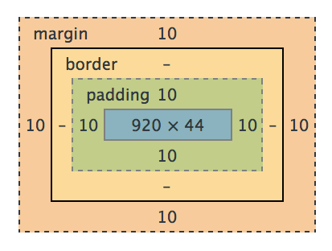

return jeffKeslin
margins, borders, and padding, oh my!
If you're like me, when you first had to use margins and padding in CSS you had one or all of the following questions pop into your mind:
Which one is inside the border? Aren't they the same thing? If I change one, does it affect the size of the other? Why can't I get some padding/margin above or below this element?Let's see if we can address some of these questions. Let's start with a visual...
This is how your Chrome Dev Tools will display the box model for an element that you've selected. Let's identify a couple important things. For this div, There's a content area of 920 x 44 pixels. There is padding of 10 pixels on the top, bottom, left, and right. And there are margins of 10px on each side. The border region (colored in yellowish) is left blank indicating that there is no border for this div. Let's see what this div actually looks like then.

This is an early version of the footer for this blog site. You'll notice it's color-coded just like our box model. The content area is in blue, the padding area in green is separating the content from the edge of the div, and the orange margin is separating the div from other outside elements.
Here's the important thing to remember:
Padding: Separates inner content from the borders of the div Margin: Separates the div from other elementsTime for a pop quiz. Take a look at the 5 divs in the image below. Take a second to identify which divs have margins and padding and which do not:

Hover your cursor below to reveal the answers...
1. No padding, no margins, 1px red border 2. No padding, 5px margins on all sides, 1px border 3. Padding of 5px on all sides, no left/right margin, no border4. Padding of 5px, margin of 5px, no border 5. Padding, margins, and borders all around!For more information on margins, borders, and padding and other fun stuff, click on the Resources link at the top of the page.
And happy coding!